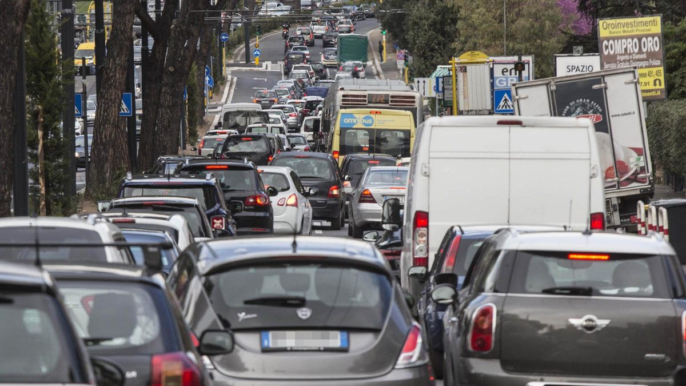
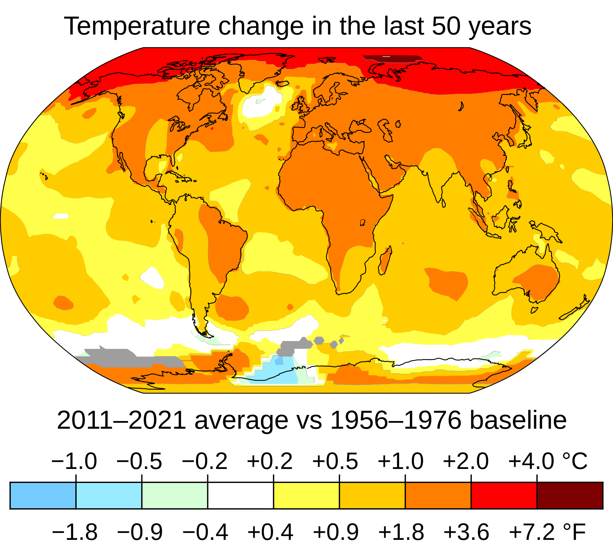
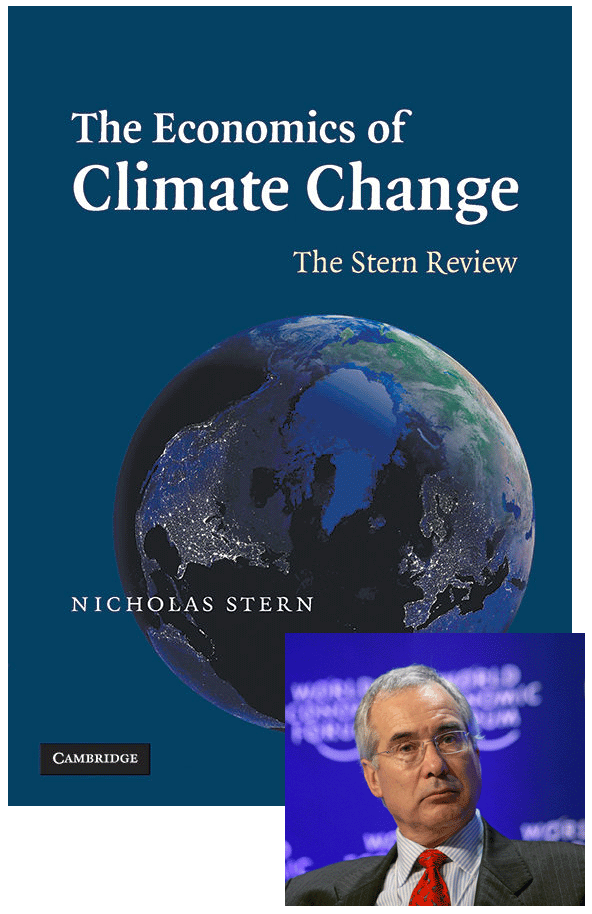
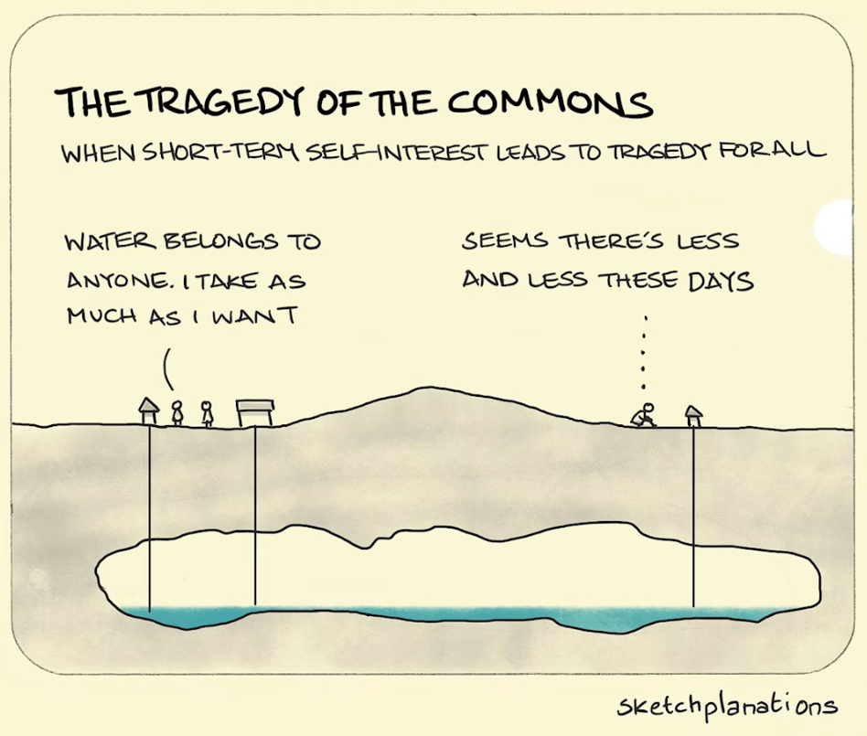
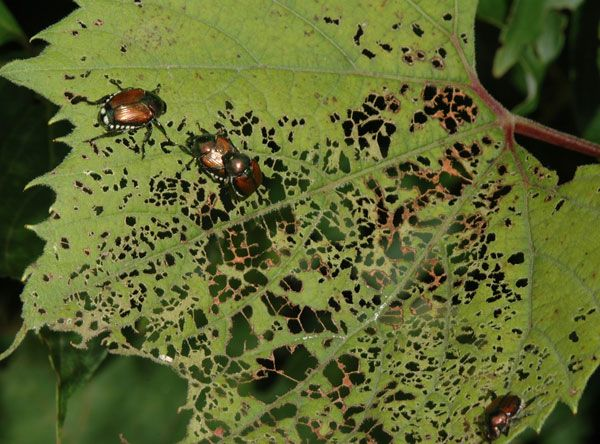
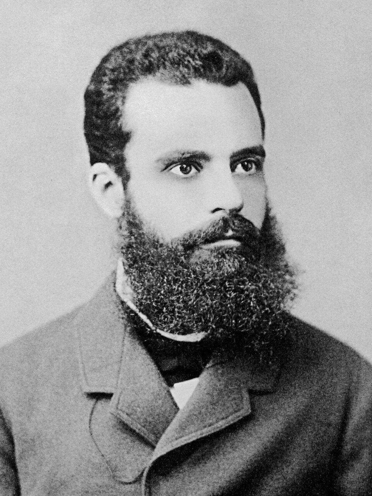

#2
October 2026


In 2005, the British government asked Nicholas Stern, former Chief Economist of the World Bank, to prepare a report on climate change.
“The scientific evidence is now overwhelming: climate change presents very serious global risks, and it demands an urgent global response.”


Alice and Bruno are wine producers in the Tuscan countryside of Chianti.
Each is deciding how to deal with invasive pests threatening their vineyards.

Each farmer makes their decision without knowing the other farmer’s choice.
If just one farmer chooses Toxic Tide, then the damage is limited.
If they both choose it, then water contamination becomes a serious problem, and they need to buy an expensive filtering system.
Alice’s best responses:
Toxic Tide is Alice’s dominant strategy: it will give her the highest payoff, whatever Bruno does.
Similarly, Toxic Tide is also Bruno’s dominant strategy.
Since Toxic Tide is the dominant strategy for both farmers, it is likely that both will use it.
Dominant strategy
A strategy that gives a player a higher payoff than any other strategy, regardless of the strategies chosen by the other players.
Dominant strategy equilibrium
A combination of strategies in which every player chooses a dominant strategy.
Not all games have dominant strategies.
A dominant-strategy equilibrium is always a Nash equilibrium, but the converse is not true!
If a dominant strategy equilibrium exists, we would expect it to be the outcome of the game.
In equilibrium, Alice and Bruno each receive a payoff of 2. But both would be better off if they both used IPC instead (they would receive a payoff of 3).
Thus, the dominant strategy equilibrium is not the best feasible outcome. The pest control game is an example of prisoner’s dilemma, in which self-interest leads to an outcome that nobody would endorse.
Prisoner’s dilemma
A game that has a dominant strategy equilibrium, but also has an alternative outcome that gives a higher payoff to all players. Thus, the Nash equilibrium is not Pareto-efficient.
In the definition of the Prisoner’s dilemma, we mentioned Pareto-efficiency.
What does this mean?
Suppose we want to compare two possible outcomes of a game, called A and B. Can we say which is better?
If everyone involved in the interaction would prefer A, then it is reasonable to say that A is a better allocation than B.
This is what the Pareto criterion, named after Italian economist Vilfredo Pareto, would tell us.
The Pareto criterion
According to the Pareto criterion, an interaction outcome A is better than an interaction outcome B if at least one party would be strictly better off with A than with B, and no one would be worse off.
If this is the case, we say that A Pareto-dominates B, or that A would be a Pareto improvement over B.
Pareto-efficiency
An interaction outcome that is not Pareto-dominated by any other outcome is Pareto-efficient. If an allocation is Pareto-efficient, then there is no alternative allocation in which at least one party would be better off and nobody worse off.

In the next slide, we have plotted the four outcomes of the Pest control game in a graph, with Alice’s payoff on the horizontal axis and Bruno’s on the vertical axis.
Strategies are labelled I (IPC) and T (Toxic Tide).
Alice and Bruno are self-interested, preferring outcomes with a higher payoff for themselves.
There are three Pareto-efficient outcomes: (I, T), (I, I), and (T, I).
Outcome (T, T) is not Pareto-efficient: it is dominated by (I, I).
The Pareto criterion is cautious: it makes no value judgement beyond the least controversial one that an outcome is better if it makes at least one person better off and no one worse off.
The concept of Pareto efficiency may not tell us much about what is best.
There may be other criteria that matter as much as, or more than, the Pareto criterion. One example is fairness.
Example: suppose food is allocated so that some people have more than enough while others are starving. In everyday language, we might say: “This is not a good way to distribute food.”
But Pareto efficiency means something different. A highly unequal distribution of food is Pareto-efficient as long as all the food is consumed by someone who values it, even slightly. Redistributing food to those who are starving would then make someone else worse off.
The players’ dilemma is that the dominant-strategy equilibrium, (T, T), is not Pareto-efficient.
There is an alternative, the ‘cooperative’ outcome (I, I), which Pareto-dominates the equilibrium outcome: both players prefer it.
Outcome (I, I) also has other potentially desirable properties: it is fair, because the payoffs are equal, and it maximizes the sum of the players’ payoffs.
However, in a prisoner’s dilemma, the cooperative outcome does not Pareto-dominate every other outcome. If the players follow their dominant strategies, they will not achieve it.
Alice and Bruno’s problem is hypothetical, but it captures key features of dilemmas faced by millions of people around the world.
Example: Many farmers in Southeast Asia rely on a shared irrigation system to grow their crops. The system requires ongoing maintenance and investment.
Each farmer faces the decision of how much to contribute to maintenance, which benefits the entire community.
If a farmer chooses not to contribute, others may do the work anyway.
This is exactly the kind of strategic interaction we saw in our experiment!
Suppose that four farmers are deciding whether to contribute to the maintenance of an irrigation project.
For each farmer, the cost of contributing to the project is $10.
When one farmer contributes, all four benefit from the resulting increase in crop yields made possible by irrigation, so they will each gain $8.
Let’s examine the decision faced by Kim, one of the four farmers.
Whatever the other farmers decide to do, Kim makes more money if she does not contribute than if she does. Not contributing is a dominant strategy.
Thus, Kim has an incentive to free-ride on the contributions of others.
The same is true for all the other farmers.
Free-riding
Benefiting from the contributions of others to some cooperative project without contributing oneself.
This public goods game is a prisoner’s dilemma in which there are more than two players.
If the farmers care only about their own monetary payoff, then there is a dominant strategy equilibrium in which no one contributes and all farmers receive a payoff of zero.
On the other hand, if all contributed, then each would earn \(8 \times 4 - 10 = 22\).
Everyone would benefit if everyone cooperated. However, regardless of what the others do, each farmer does better by free-riding.
If Alice cared sufficiently about the harm she would inflict on Bruno by using Toxic Tide when he was using IPC, and Bruno felt the same way, then the two would no longer face a Prisoner’s dilemma.
Altruism is an example of a social preference, just as are a preference for fairness and a wish to reciprocate others’ cooperative behaviour.
Altruism
A person who is willing to bear a cost in order to help another person is said to be altruistic.
Altruism could help solve the free-rider problem: if Kim cared about the other farmers, she might be willing to contribute to the irrigation project.
However, when large numbers of people are involved in a public goods game, altruism alone is unlikely to be sufficient to sustain a mutually beneficial outcome.
Yet farmers and fishers around the world have often successfully addressed public-goods problems (Ostrom 2010).
How is this possible? We will see it in the next lecture!
Read the paper HERE
Social dilemmas defined
Social dilemma
A strategic interaction in which actions taken independently by individuals in pursuit of their own private objectives result in an outcome which is inferior to some other outcome that could have occurred if people had acted together, rather than as individuals.
Social dilemmas entered game-theoretic discourse through examples such as Hardin’s ‘tragedy of the commons’.
In 1968, biologist Garrett Hardin published an influential article arguing that shared resources, such as fish stocks and the Earth’s atmosphere, are vulnerable to overexploitation by people who pursue their short-term self-interest.
Read the paper HERE